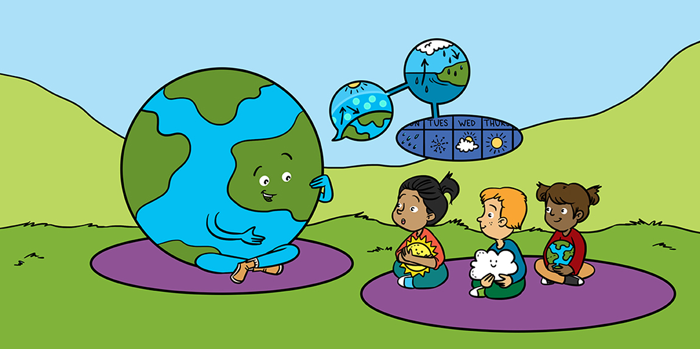

Chers les petits
Le changement climatique est important, mais nous pouvons tous faire une différence en prenant de petits gestes au quotidien. Voici quelques conseils pour aider à protéger notre belle planète :
- Économisez l'énergie en éteignant les lumières et les appareils lorsque vous ne les utilisez pas.
- Utilisez moins de plastique en privilégiant les bouteilles réutilisables et les sacs en tissu.
- Plantez des arbres pour aider à absorber le dioxyde de carbone et à garder l'air propre.
- Recyclez vos déchets autant que possible.
- Éduquez vos amis et votre famille sur l'importance de prendre soin de la Terre.
Ensemble, nous pouvons créer un monde plus vert et plus heureux pour tous!
Regardez notre vidéo ci-dessous sur les expériences que nous avons réalisées et lisez la suite pour apprendre comment vous pouvez vous amuser en faisant des expériences, tout en éduquant vos enfants, ou ceux que vous gardez, sur le climat et l'environnement.
